STORY OF THIS PROJECT

Batas ruang dan perangkat seolah melebur dalam ujian akhir mata kuliah Workshop Jaringan Multimedia pada semester 4. Sebuah projek ambisius dirancang untuk menjawab tantangan tersebut: WebRTC Remote Desktop Viewer. Sistem ini memungkinkan dua komputer untuk saling mengontrol atau meremote salah satu perangkat dalam satu jaringan lokal yang sama. Terinspirasi dari kepraktisan software seperti TeamViewer, projek ini dibangun ulang dalam versi yang lebih sederhana namun tetap andal dengan mengandalkan WebRTC sebagai komponen utama transmisi data.

Membangun sebuah jembatan kendali jarak jauh tentu membutuhkan fondasi teknologi yang solid agar interaksi terasa mulus. Aliran data tidak hanya sekadar terhubung tetapi juga disokong oleh Socket.io untuk merajut komunikasi dua arah secara real-time dan berbasis event antara klien (seperti peramban web) dan server. Sementara itu, untuk menghadirkan sensasi kendali yang nyata, digunakanlah RobotJS. Komponen inilah yang menjadi "tangan virtual" di balik layar, bertugas menggerakkan kursor secara presisi ke koordinat layar tertentu, melakukan klik kiri maupun kanan, eksekusi drag-and-drop, hingga menekan tombol dan kombinasi pintasan keyboard.

Merangkai berbagai teknologi kompleks ini menjadi satu kesatuan yang fungsional memberikan pengalaman berharga dalam memahami dinamika jaringan komputer. Projek ini bukan sekadar pemenuhan syarat nilai akhir semester, melainkan sebuah langkah nyata dalam menguasai aliran data multimedia interaktif yang efisien dan aplikatif.
TOOLS USED FOR THIS PROJECT

SOCKET.IORESULT OF THIS PROJECT
Mari kita bangun sesuatu yang luar biasa bersama
Terbuka untuk kesempatan magang, project freelance atau kolaborasi riset.